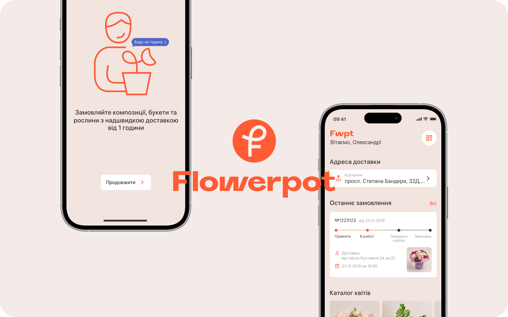
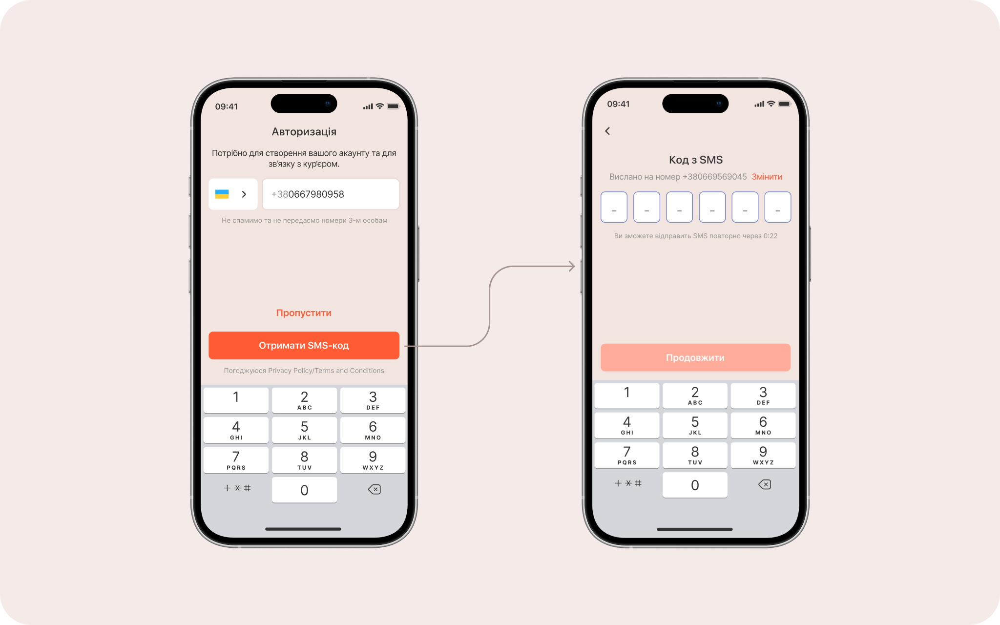
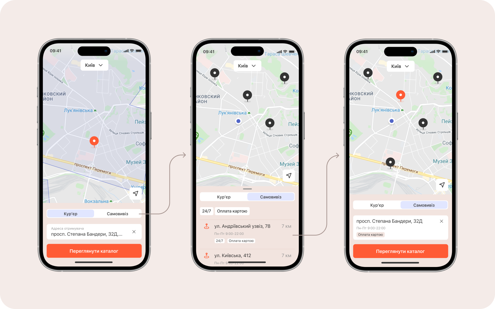
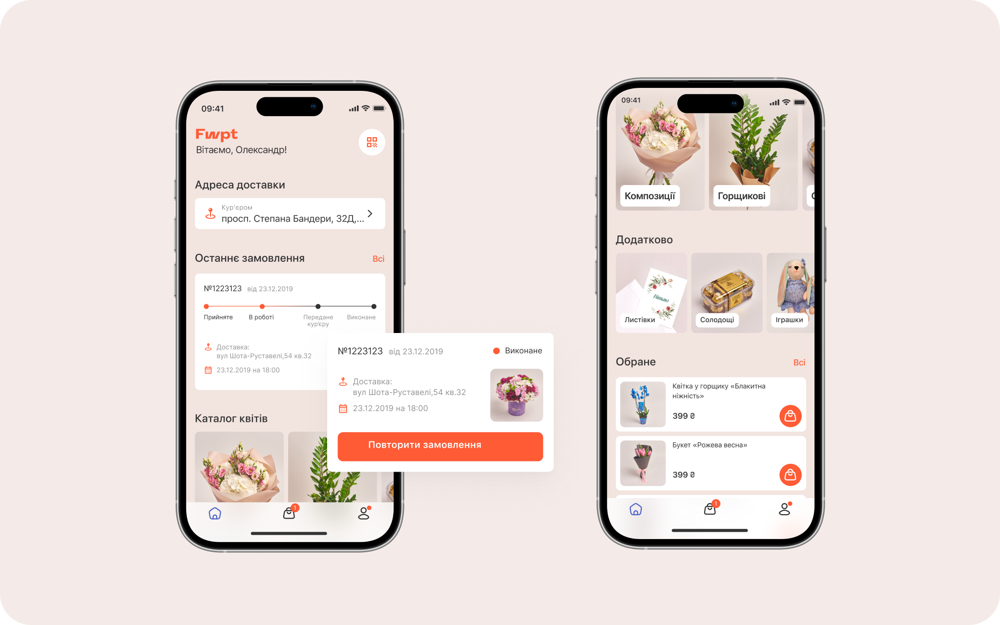
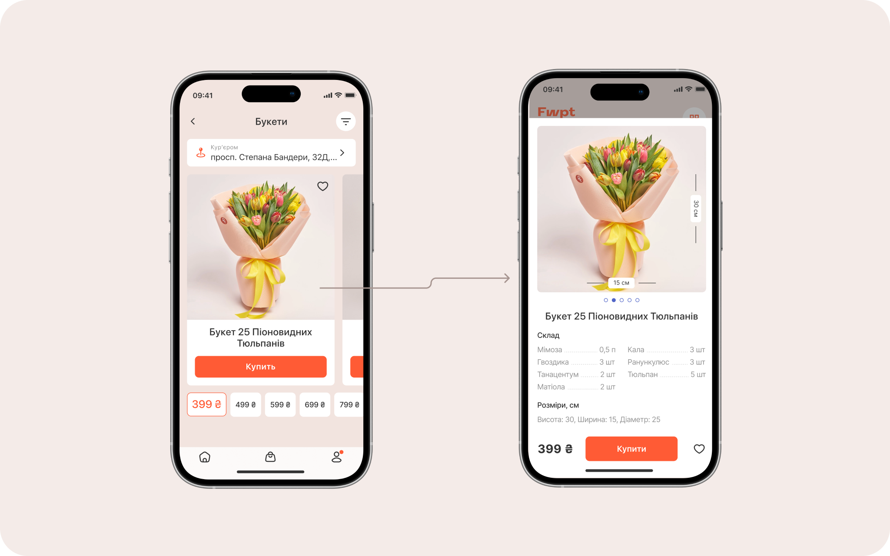
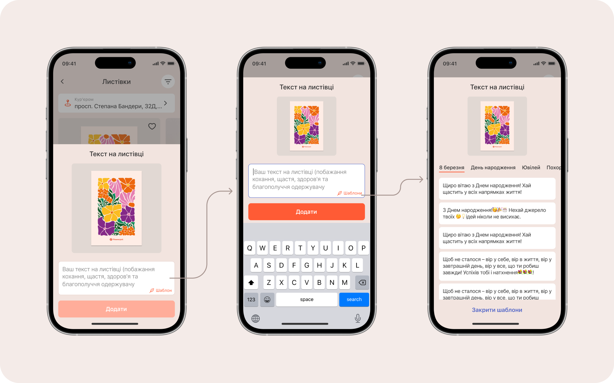
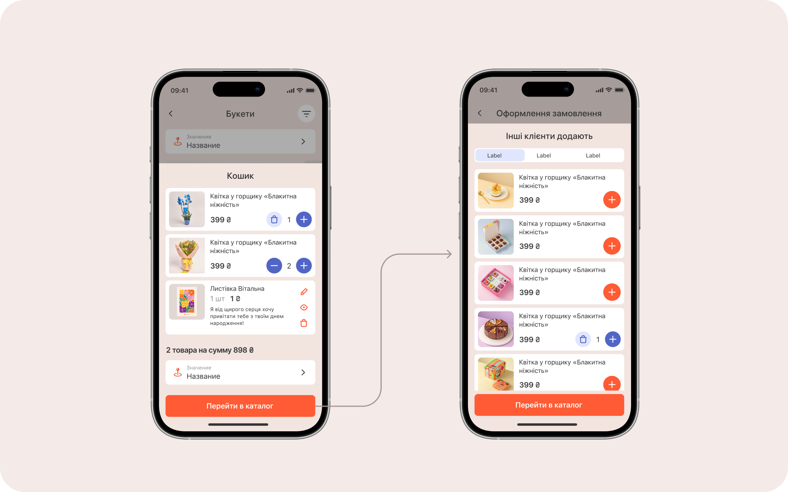
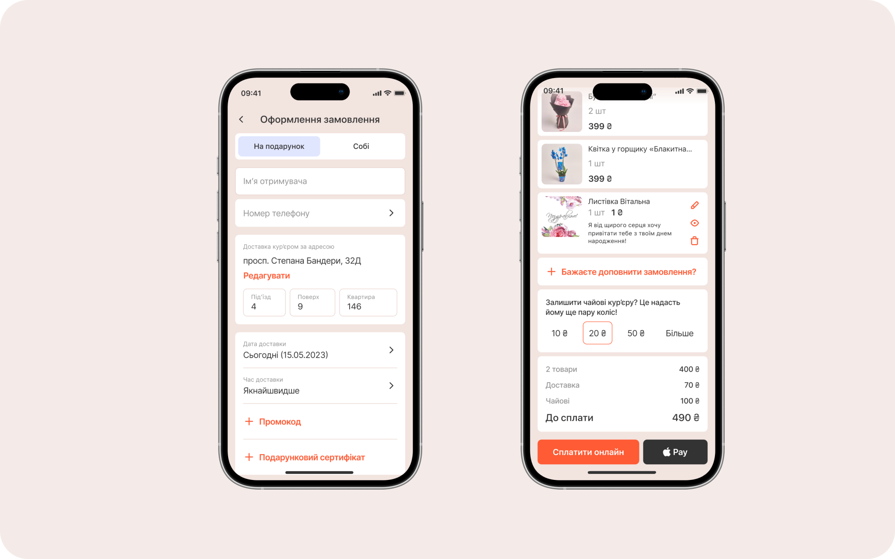
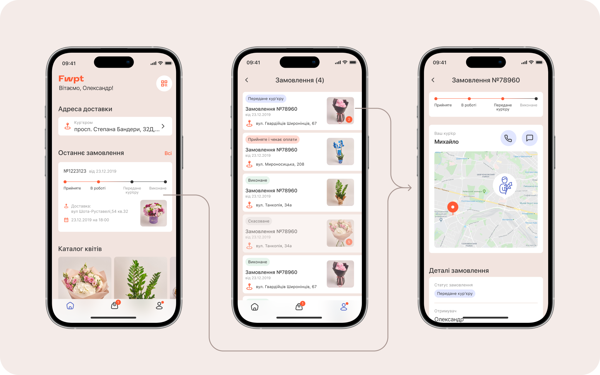
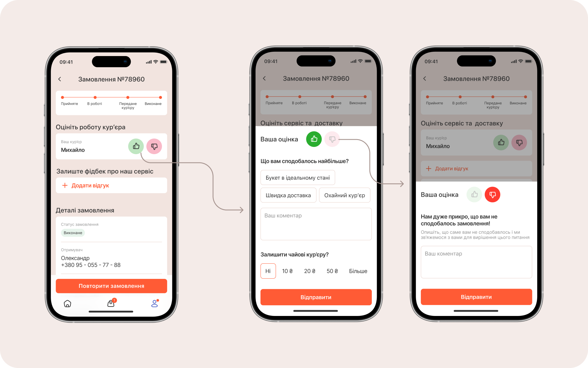

Flower delivery app design

Goals
Design an app for ordering and fast courier delivery of flowers. Translate the familiar experience users already have with food delivery services into a flower delivery context.
Main flow
Onboarding
It's important to communicate the app's value right away. The first two screens highlight the key features: fast delivery and the ability to track your order, just like in apps such as Glovo or Uber.
The service currently operates only in Kyiv, so on the second screen the user needs to see this and confirm it.

Sign in
After onboarding, the user is prompted to sign in. However, this step can be skipped at first to avoid friction and let users browse the catalogue straight away.

Delivery method
On first launch, the user needs to choose a convenient way to receive their order. This is important to do before entering the catalogue, as it affects the available assortment.

Home screen
The home screen surfaces the most important and frequently used sections and features:
- Delivery address.
- List of flower categories and related products.
- Status and brief info about the last order, with an option to repeat it.
- QR code for quick in-store order pickup.

Choosing a bouquet
We decided to move away from a standard vertical list in favour of a horizontal layout, with products sorted by price from the start. Since the in-app catalogue is fairly limited and bouquets are grouped into a few price tiers, users can quickly jump between products by tapping the prices at the bottom.

Adding a greeting card
Users can also add a greeting card to their chosen bouquet. To make writing the card text easier, message templates are provided with the option to select the occasion.

Cart
When the user taps "Place order", we use cross-selling to increase the average order value by suggesting sweets or toys to add to the bouquet.

Checkout
The checkout page is split into two tabs. The "As a gift" tab is selected by default as the most popular option, and requires the recipient's name and phone number. On the "For myself" tab, these details are filled in automatically. Users can add sweets or a toy to their order, and also leave a tip for the courier.

Delivery tracking
One of the app's key advantages is real-time delivery tracking. Users can access it by going to the order details from the home screen or from the orders list in their account.

Courier rating
After the order has been received, users can rate the courier or the service and leave a review. This helps turn feedback into improvements to the interface and the service.
